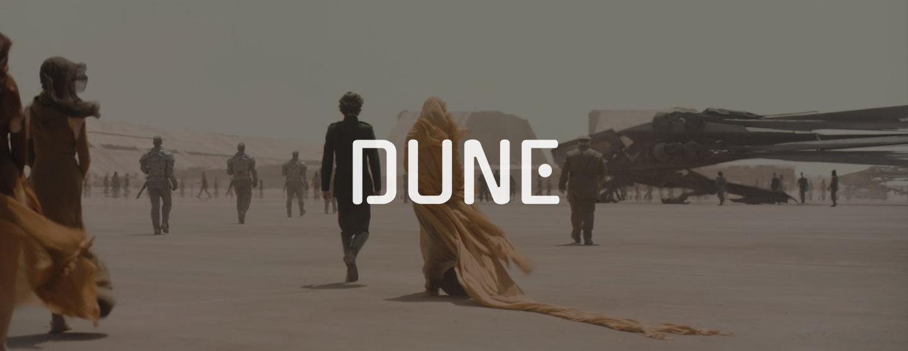

2021 | Runtime: 2h 35min | PG-13
SPOILER ALERT!
Dune follows Paul Atreides, the young son of Duke Leto Atreides, a noble and respected leader. The emperor assigns House Atreides stewardship of Arrakis, a desolate desert planet with no water and brutal heat, but home to "spice": the most valuable substance in the known universe. Spice extends human life, enhances the mind, and is essential for space navigation, making whoever controls Arrakis extraordinarily powerful. Paul's mother, Lady Jessica, is a member of the Bene Gesserit, a secretive sisterhood with advanced mental and physical abilities, and Paul has inherited some of these gifts, including the ability to see fragmented visions of the future.
Shortly after House Atreides arrives on Arrakis and begins building alliances with the local population, they are betrayed in a devastating coordinated attack by House Harkonnen, their longtime rivals, who retake the planet with the secret backing of the emperor himself. The Harkonnens had deliberately made Arrakis look like a gift to lure the Atreides into a trap. Duke Leto is captured and killed, and Paul and Jessica are left for dead in the open desert, forced to survive on their own in one of the most hostile environments in the universe.
Struggling to survive, Paul and Jessica are eventually found and taken in by the Fremen, the native people of Arrakis who have adapted remarkably to desert life over generations. The Fremen are deeply spiritual, fiercely skilled warriors, and have a profound relationship with the planet's massive, terrifying sandworms, which they regard as sacred. Paul begins experiencing increasingly intense visions of a holy war fought in his name across the universe, which disturbs him deeply. Among the Fremen he meets Chani, a young warrior woman who has appeared in his dreams, and Stilgar, a respected Fremen leader who sees potential in Paul.
To earn his place among the Fremen, Paul is challenged to a fight to the death by a warrior named Jamis, who does not believe Paul belongs with them. Paul wins the duel but takes no joy in it, mourning Jamis as the first man he has killed. Accepted into the tribe, Paul takes on a Fremen name and commits fully to their way of life alongside his mother. The film closes with Paul's resolve hardened. He intends to master the desert, lead the Fremen, and eventually take revenge against those who destroyed his family, though the visions of the bloodshed that path may bring continue to haunt him.
Rotten Tomatoes: 83%
My rating: 4.5/5
As someone who was experiencing the Star Wars drought at the time, Dune was a similar story that included the "chosen one," their rise to power, special abilities, and cool ships and already, I was seated. I enjoyed getting to know Paul Atreides and the Fremen in real time (Star Wars came out years before I was born) and I felt like I was part of something very big, and that, it was.
Shoutout to Greig Fraser's cinematography in this film because it is one of the most insane visuals I have ever seen in a film. Every scene feels so thought out, so real, and just carved to perfection. Dune is so visually aesthetic. The planets Caladan and Arrakis look so real, and makes me feel like I am experiencing the atmosphere and ground beneath me. Out of all of Villeneuve's films I've reviewed, this one takes the trophy for best visuals.
I was a bit skeptical about Timothée Chalamet being a serious character in a space film, but his performance really proved me wrong. I was blown away and I thought his performance was great. While I haven't read the books, I believe his embodiment of Paul Atreides and his prince-like characteristics was spot on. Oscar Isaac's short lived performance of Leto Atreides was a nice addition, and I didn't hate it. Zendaya, even though she is a respectable actress, didn't convince me of being a Fremen. Most Fremen have an accent, however, Zendaya's character, Chani, doesn't, and takes away from the fact that the Fremen aren't native English speakers. Nevertheless, I think the cast is absolutely stacked, and I rather enjoy the fact that big Hollywood names worked on this film.
Once again, this film would be nothing without its soundtrack. While I do believe Dune: Part Two's soundtrack is better than Dune: Part One, I still think that this soundtrack set the tone for the next film in the trilogy. There were parts where the music built suspense and anguish, or you felt a chill in your bones, and I think Zimmer does an amazing job of really tying in the music and the film.
Overall, Dune was a great first movie to begin the trilogy. It did an amazing job at setting the scene for those who haven't read the books, properly introduced the characters, and left you wanting more by the end of it. I wish I could rewatch it for the first time. Villeneuve once again delivered.